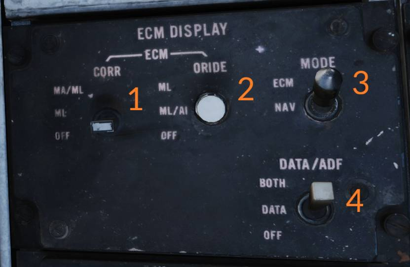

The AN/ALR-45 and AN/ALR-50 combination was introduced during the early 70s as a
response to the increasingly lethal SAM and AAA systems introduced during that
era. It's purpose is to inform the crew about threats and help them defend
against them by indicating reception of threat emissions and when they pose a
threat to the aircraft. Similarly to ALR-67 it's working in cooperation with
DECM jammer (ALQ-100).
The AN/ALR-45 has four quadrant receiver antennas located on the front sides of
the engine intakes as well as the trailing outer edges of the stabilators to
provide a 360 degree coverage of the aircraft. It provides a general ECM
situational awareness as well as indicating emitters locking onto and attacking
the aircraft.
The AN/ALR-50 is a dedicated missile warning system and has one upper antenna
located aft of the cockpit and another lower antenna located on one of the nose
gear doors. The purpose of the AN/ALR-50 is to detect and warn about possible
missile launches. It can identify MA (missile alert) and ML (missile
launch) conditions for some of the radars which use missile command-link
signals. (Currently in DCS the MA should be interpreted as lock and ML as
launch)
Both systems are used as a combined set and can be used to trigger
countermeasure program release from the AN/ALE-39 as well as triggering the DECM
into transmission.
The system displays threats on the pilot HSD and the RIO ECMD when they are set
to ECM. Via the display controls the ECM can be allowed to override the current
display if a threat is detected.
The main ECM control panel for the AN/ALR-45 and AN/ALR-50 is located on the
RIO's right horizontal console. The power switch for both system is located on
the right side of this control panel and is labeled PWR - ALR-45/50
(5).
The three three-position switches (1, 2 and 3)
on the top control the three operating bands of the AN/ALR-45 allowing exclusive
display of that band or removal of that band from the displays. The upper
position, BYPASS, is momentary and holding the switch to that position
allows all signals in that band through regardless of their parameters, normally
only those matching threats are passed through. Holding a band to BYPASS
removes the other two band from the display completely though which is why the
switch is automatically returned to NORM when released. The NORM
position allows for normal operation of that band. The lower position,
DEFEAT, is locked out and the switch need to be lifted to allow movement to
this position. The DEFEAT position completely disables the selected band.
The middle volume knob, 4, controls the audio levels of the AN/ALR-45
and AN/ALR-50 in the RIO's headset. The outside part of the knob controls audio
from the AN/ALR-45 and can be turned off if needed. The inside part controls
audio from the AN/ALR-50 can't be completely turned off as it controls the MA/ML
tones.
The AAA switch (10) enables or disables display of strobes
relating to AAA threats, the threat acronym and indicator lights still function.
NORM allows normal operation and display of AAA threats and DEFEAT
disables the strobes.
The UNKNOWN switch (6) disables display of normal threats and
display all unknown signals not identified as normal threats as solid strobes,
the UNK acronym will be display whenever there are any present. The DISPLAY
position allows this display and is momentary and needs to be held and the
OFF position allows normal AN/ALR-45 operation.
The three test switches (7, 8 and 9) are all
spring-loaded to center and allows for activation of BIT for the selected band
or system. The TEST - LOW/OFF/MID switch enables BIT of the AN/ALR-45
LOW and MID band. The LOW position should result in a dotted strobe
in each quadrant as well as audio and associated warning lights and acronyms for
AAA and SAM LOW. The MID position should result in a dot-dash strobe in each
quadrant as well as audio and associated warning lights and acronyms for AAA/AI
and SAM MID. The TEST - ML/OFF switch enables BIT of the AN/ALR-50 in the
ML position and should result in flashing SAM lights and range rings on the
display as well as associated audio tones. The TEST - HIGH/OFF switch
enables BIT of the AN/ALR-45 high band in the HIGH band and should result in
a dashed strobe in each of the four quadrants on the display as well as audio
and associated warning lights and acronyms for AI and SAM HIGH.

The ECM DISPLAY control panel is also located on the RIO's right horizontal
console. It controls the RIO's ECMD display as well as generic display
settings for both displays.
The ECM - CORR switch (1) allows setting how the two systems
correlate their threats. It is spring-loaded back to ML. The MA/ML
position is a momentary position and allows the RIO to correlate AN/ALR-50
threats with a MA or ML condition to a AN/ALR-45 threats. The ML
position, which is the normal switch position, sets the ECM to only correlate a
AN/ALR-50 threats to an AN/ALR-45 threats if a ML condition occurs. The
OFF position defeats (disables) the correlation momentarily allowing for
normal uncorrelated threat display.
The ECM - ORIDE switch (2) controls when the ECM can override the
NAV display on the ECMD. The ML position allows override if a ML
condition occurs. The ML/AI position allows override if a ML condition
occurs or an AI (Airborne Intercept, i.e. fighter radar) is detected. The
OFF position disables override.
The MODE switch (3) selects which system to display on the
ECMD. ECM displays the ECM and NAV displays NAV.
The DATA/ADF switch (4) controls what additional text information
to display in the NAV mode. BOTH displays ADF and general navigation
information, DATA displays only the general navigation information and
OFF disables all extra text.
The switch controlling display of ECM information to the pilot is located on the
and the volume controls are located on the
.
The two crewmembers have warning lights dedicated to specific threats on their
front cockpit panels. The pilot warning lights are situated on the right side of
the HUD and the RIO warning lights on the right side of the TID. The RIO warning
light panel also contains lights for the AN/ALQ-100 and the IFF transponder,
those are detailed under their respective section.
The different lights illuminate to indicate the presence of a certain type of
threat.